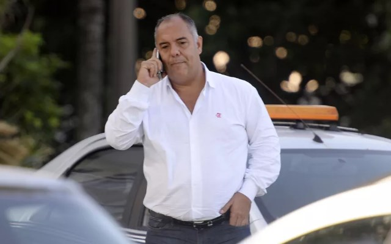

Marcos Braz admite negociação com ‘reforço misterioso’: “Conseguimos guardar segredo”
22/07/2021 Ao longo das últimas semanas, o Flamengo definiu alguns jogadores como prioridades no mercado, a fim de reforçar seu já estrelado elenco. Entre eles, Thiago Mendes e Kenedy (Lyon e Chelsea, respectivamente), foram os que mais agradaram a diretoria e já saíram na ‘grande mídia’. No entanto, em entrevista antes da decisão na Libertadores, o vice-presidente de futebol, Marcos Braz, revelou que ainda existe um reforço que o Fla mantém em segredo.
Leia mais